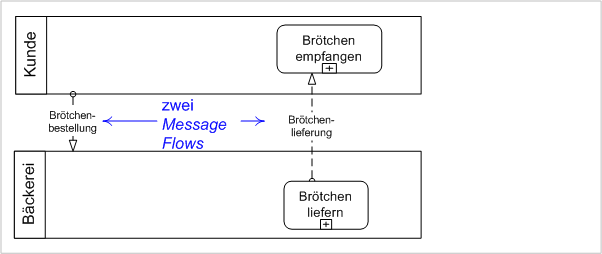

Anfang weiterWorkflow
aktive bzw inaktive Menü-Punkte Buttons Links realisieren den Workflow (aktiv/inaktiv je nach Rolle des Benutzers und Status der Daten) nur aktuell aktive Rolle(Schwimmbahn) treibt den Workflow (hat aktive Menü-Punkte usw)  Quelle: Wikipedia Workflow (Business Process) ist aus Constraints rückableitbar